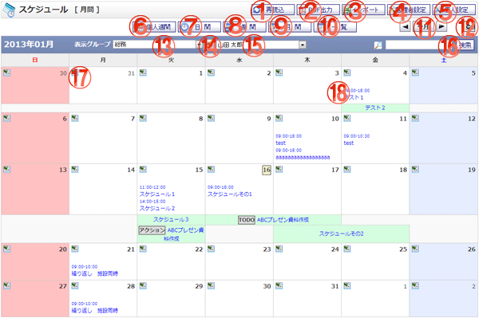

スケジュールを月間単位で参照する画面です。

機能説明
再読込ボタン表示画面の再読込を行います。 |
PDF出力ボタンスケジュール画面をPDF出力します。 |
|---|---|
インポートボタンスケジュールインポート画面へ遷移します。 |
管理者設定ボタン管理者設定メニュー画面へ遷移します。 |
個人設定ボタン個人設定メニュー画面へ遷移します。 |
個人週間ボタンスケジュール 個人週間画面へ遷移します。 |
日間ボタンスケジュール 日間画面へ遷移します。 |
週間ボタンスケジュール 週間画面へ遷移します。 |
月間ボタンスケジュール 月間画面へ遷移します。 |
一覧ボタンスケジュール一覧画面へ遷移します。 |
先月・今月・翌月移動ボタン現在表示している月の表示を切り替えます。
|
カレンダーボタンポップアップでカレンダー画面が開きます。 |
グループコンボ登録されているグループ・マイグループ（橙色）の一覧が表示されます。このコンボで選択されたグループに所属するユーザの情報が表示ユーザコンボに表示されます。 |
グループボタンポップアップでグループ選択画面が開きます。 |
表示ユーザコンボグループコンボで選択されたグループに所属するユーザ一覧が表示されます。このコンボで選択されたユーザの情報がスケジュール一覧に表示されます。 |
検索ボタン検索ボタンをクリックすると、入力したキーワードを元にスケジュールの検索を行い一覧画面へ遷移します。 |
スケジュール新規登録ボタンスケジュール登録画面へ遷移します。 |
スケジュールタイトルリンク登録されているスケジュールのタイトルが表示されます。クリックするとスケジュール編集画面へ遷移します。 |
表示・入力項目説明
検索キーワード
検索するキーワードを入力します。